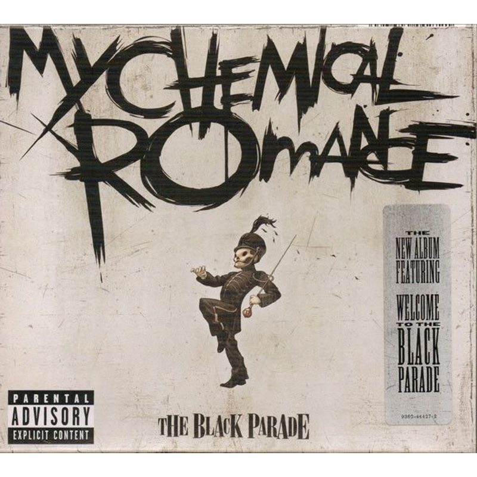

Товар


- 
Товар
Первой исполненной песней стала «Skylines and Turnstiles», которую Джерард написал после терактов 11 сентября. Уже в 2002 году группа выпускает дебютный альбом «I Brought You My Bullets, You Brought Me Your Love».
В 2002 году группа выпускает дебютный альбом «I Brought You My Bullets, You Brought Me Your Love». Второй альбом «Three Cheers for Sweet Revenge» приносит коммерческий успех и платиновый статус.
Cамым известным становится третий альбом группы «The Black Parade», вышедший в 2006 году и ставший любимчиком среди приверженцев эмо-культуры (хотя Джерард не раз высказывался, что ему это не очень нравится).
Два платиновых статуса, всемирная известность и море поклонников вдохновили музыкантов продолжать, поэтому в ноябре 2010 года вышел четвёртый студийный альбом «Danger Days: The True Lives of the Fabulous Killjoys».
Премьерные показы клипов на MTV, создание саундтрека для третьих «Трансформеров», большой тур The World Contamination Tour. Казалось бы, что ещё нужно? Однако 22 марта 2013 года группа объявила о своём распаде